Scene008：冻结21K底座的道路材质与接缝实验
四帧接缝数值改善，尚未达到完整无回退。完整C道路层在49帧上新增正式2K后停止；K接缝校正后，L精确回滚12父去掉两处刺眼白点，6项汇总和106项局部接缝门仍通过。细黑缝、相邻暗点、色边和保护域侵入尚未全解决。未替换原v44＋a5默认结果，K/L均未扩49帧。
21K组件底座与原车顶、身份冻结
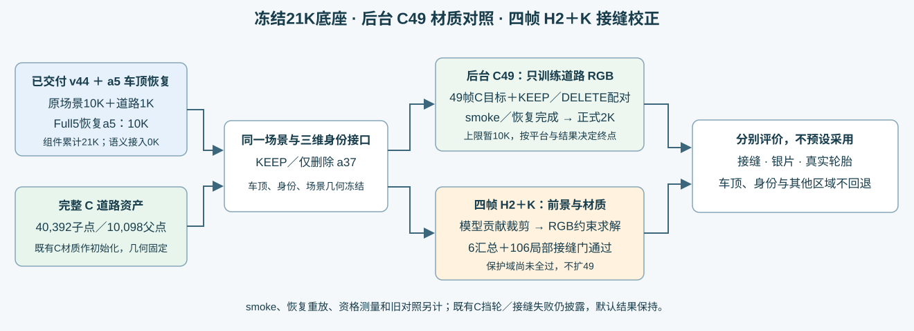
21K＝v44原生重建10K＋原道路修复1K＋恢复a5的Full5重建10K；身份核对和组装0K，是组件累计。新增只优化道路父共享RGB，原Gaussian、SH、车顶、车辆、身份、环境、几何和intrinsic opacity均0更新。端到端20K／纯Full5替换按用户后续指示撤回，已执行诊断保留。
原交付冻结核验 · 实际成本账本 · 历史控制与原始执行快照
四帧L反事实：确认2K材质学习造成的白点
固定两白点全部positive父并集12行，一次性精确恢复其Cwarm颜色，不挑子集或搜混合比例；实际10父／40child有变化，其余父、全部几何、透明度和身份不变。这是离线编译到同一三维材质表的因果控制，不使用查询GT贴图，也不是通用保护算法的完成版。
新增真实8F／0B／0优化／0新求解。原生106 signed接缝读出与K逐值相同，6汇总＋106局部门仍全部通过；相对K全图alpha／depth／8组件／a5语义颜色均逐值同。两白点总RGB与Cwarm逐值一致：128的观测RGB MAE .47223744→.03037674（21K .01313573，仍较差）；137 .42410289→.01774119（21K .02492114，较好）。
原94门仍55通过／31失败／8空域。代理实际查看完整128/137 DELETE与固定裁剪板：刺眼白点消失，但旁边暗点及道路细缝／色边仍在，不宣称整体修好，不据两点控制自动扩49。
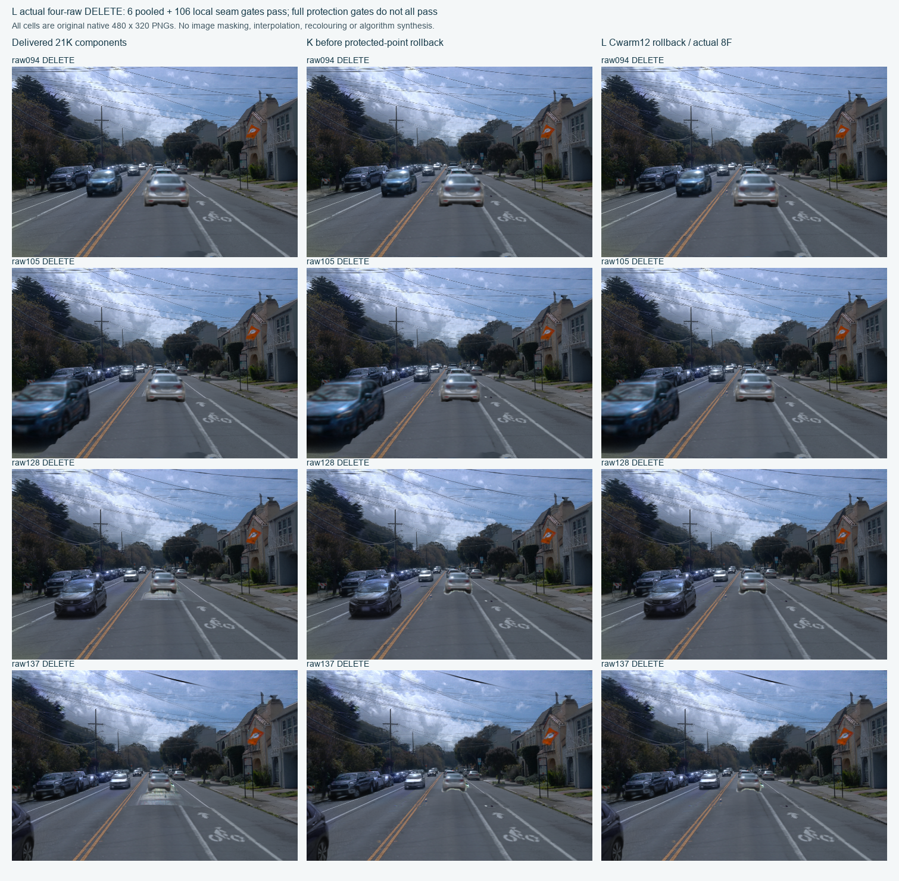
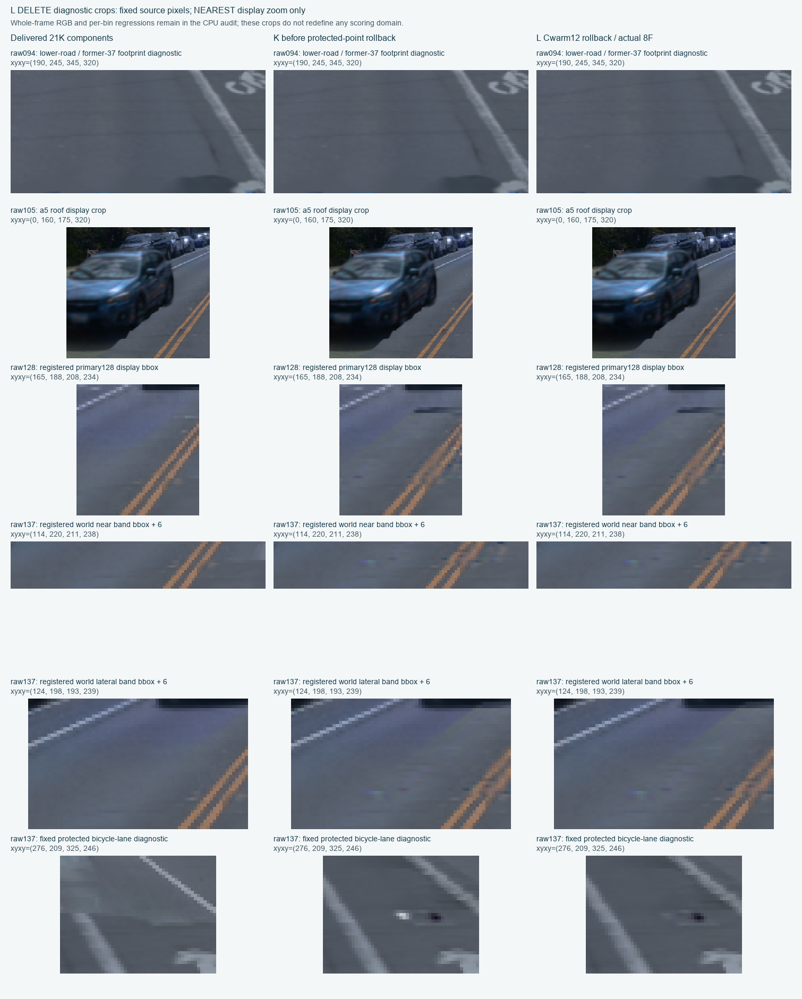
L完整KEEP四帧
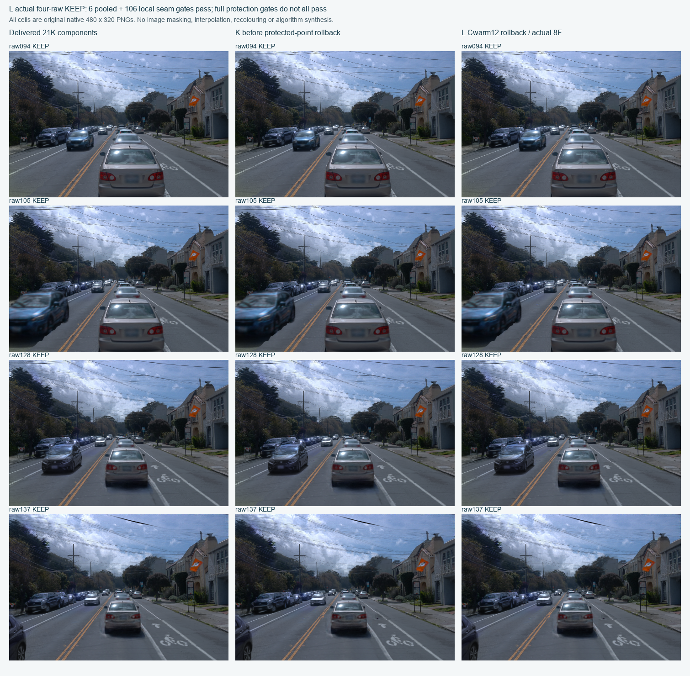
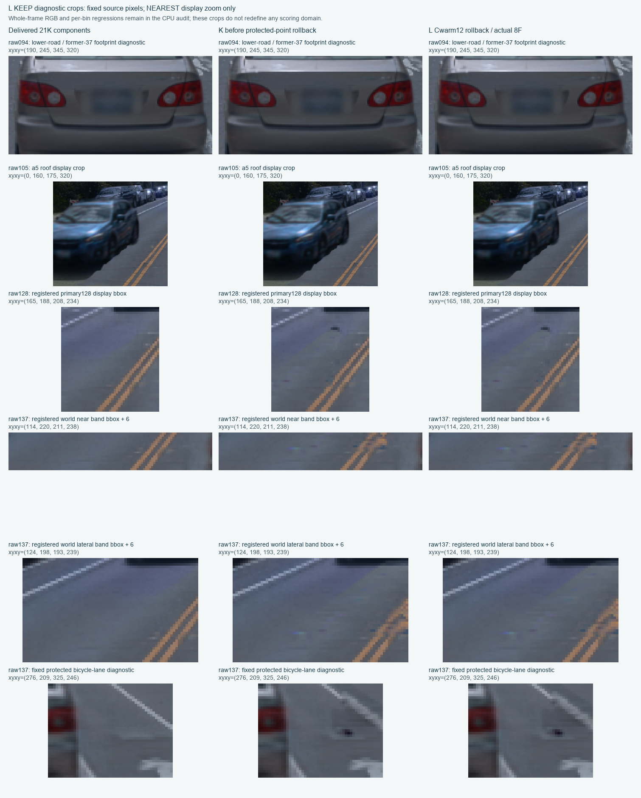
独立实际6＋106与两点检查 · L原94门完整复评 · 已封8F合同 · 持久三维材质manifest · 24源PNG完整性与显示裁剪
真实四帧K：减少接缝，保留可见负例
H2由冻结车辆模型的正贡献，迭代剔除侵入前景的整道路child；不使用查询RGB、查询观测mask或屏幕贴图。K复用H2＋2K固定几何和可见性，求解一份持久道路RGB，KEEP／DELETE共用，所有图均由原生rasterizer重新输出。
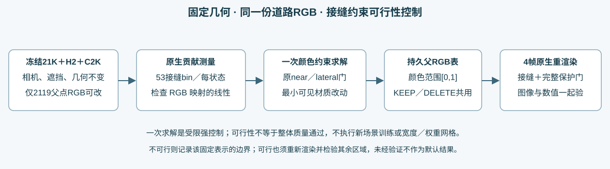
| 固定残差jump，越小越好 | KEEP：21K → K | DELETE：21K → K |
|---|---|---|
| 原128主接缝 | 0.00548139 → 0.00377605 | 0.00800314 → 0.00629795 |
| 世界近边界 | 0.00603577 → 0.00500314 | 0.00714927 → 0.00560753 |
| 世界侧边界 | 0.00383155 → 0.00368891 | 0.00352320 → 0.00343041 |
6项汇总和106局部约束全部通过原门。并非106项均严格改善：相对21K，KEEP为12改善／24微回退／17相等，DELETE为12／32／9。微回退均小于原1e-6容差；最小原门余量7.54e-8，部分超过额外1e-7工程预留2.46e-8，原门未改。真实8F相对仿射预测最大误差5.13e-8。
K一次CPU HiGHS求解＋8F，0反向／0Adam；40父RGB变化、最大约0.506。仅改资产两份RGB数组，其余7979冻结父及全部非RGB字段保持；相对H2＋2K，全图alpha／depth／8组件贡献／语义a5颜色逐值一致。这个相等参照是H2，不是原21K。
DELETE完整四帧
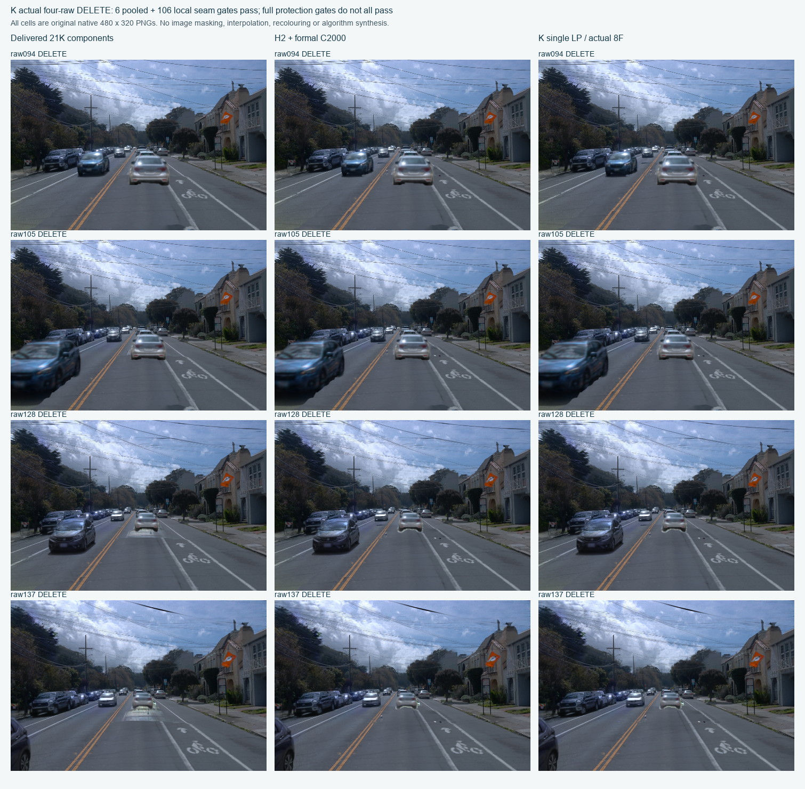
同位置放大：薄缝和色边仍可见
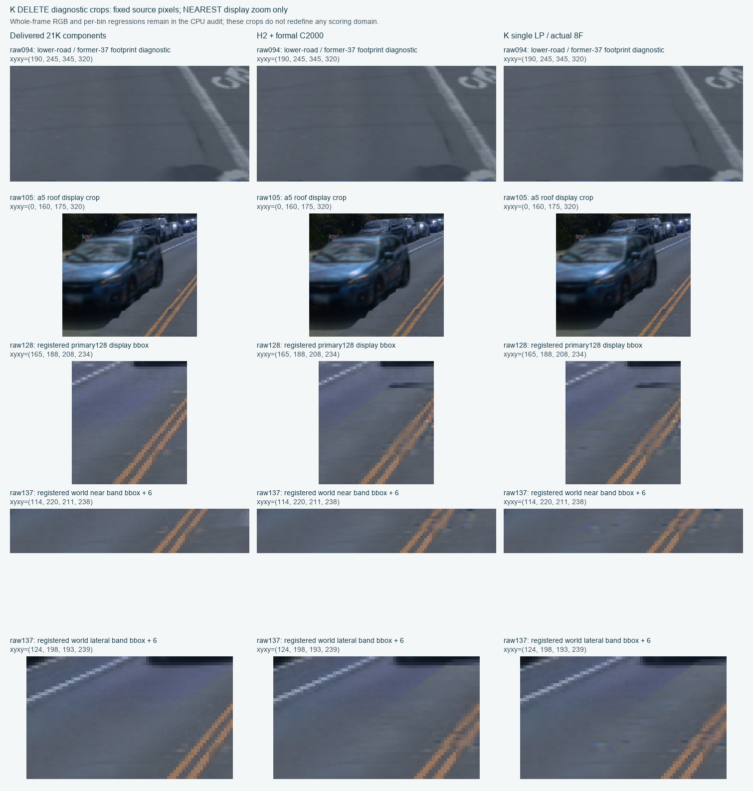
KEEP四帧与局部
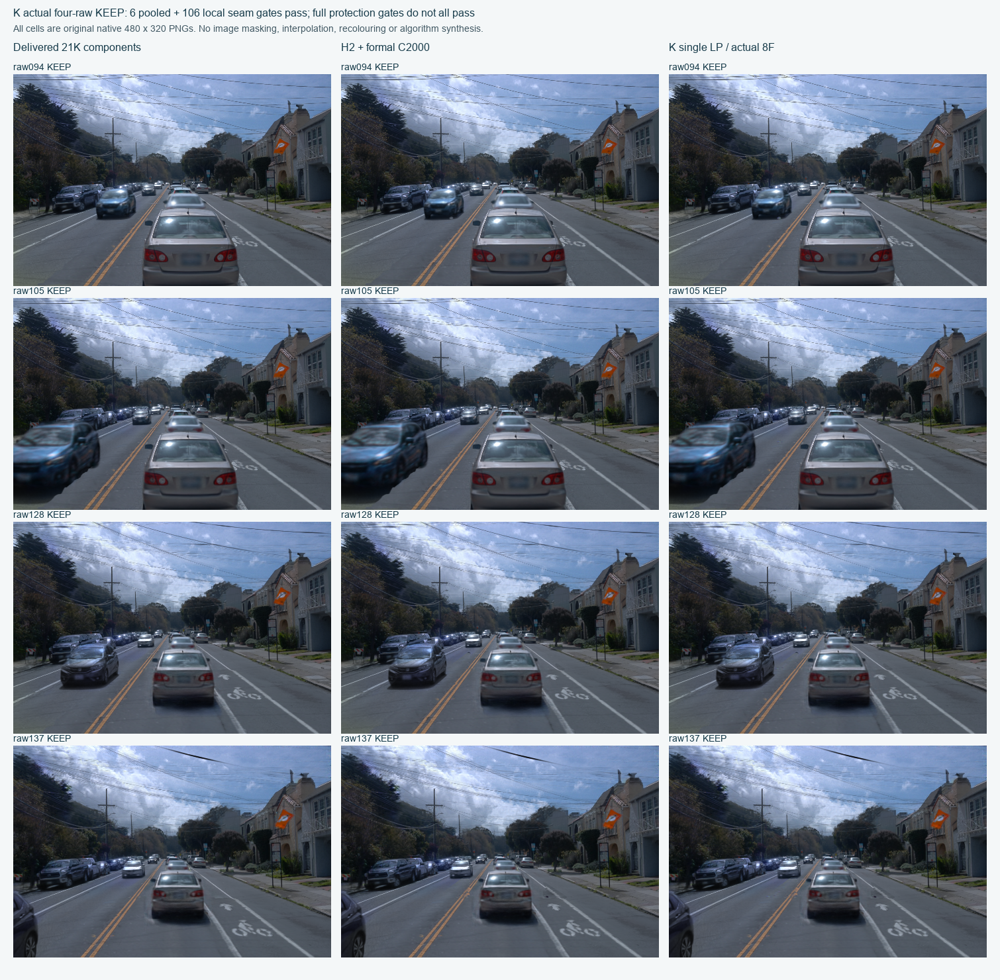
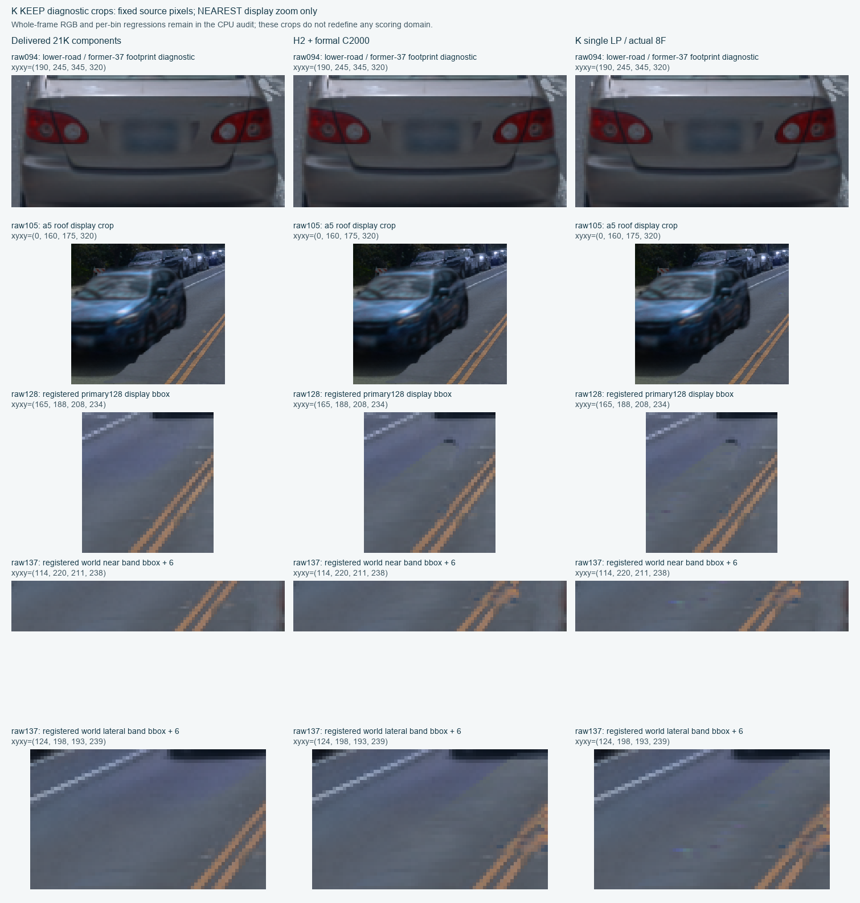
K/L仍有31个原失败门
| 原失败类别 | 项数 |
|---|---|
| protected_nonroad_RGB | 7 |
| original_road_RGB | 8 |
| nonroad_guard:alpha_pixel_max_abs | 8 |
| nonroad_guard:depth_pixel_max_abs_m | 8 |
原94门为55通过／31失败／8空域。大深度变化多数落在删除37的旧足迹，确有道路接管；另外存在真实保护域侵入及a26／a18各1像素投影尾，不能全部豁免。原门、原mask、原阈值保留。
以下保留K阶段原始负例：128(301,221)和137(300,227)白点在H2、J、K逐float相同，并非K求解新造；L已在两点恢复Cwarm，见前节，但相邻暗点与其它保护门仍未解决。额外真实2F／2dummyB单像素父贡献测量已确认：每点12父贡献，128可训练父质量.965929／总.966053，137为.951755／总.953506，均超过99%；不是零资格父锁死。128新增道路RGB_T由Cwarm(.3673,.3961,.4431)升到2K(.8281,.8458,.8582)，白点来自这轮材质学习，J/K均未改掉它。全部父权重闭合及四版本颜色重构通过，0优化。137最坏近边界bin与“地先”C2像素无交集，不能把黑缝归因于车辆白尾。
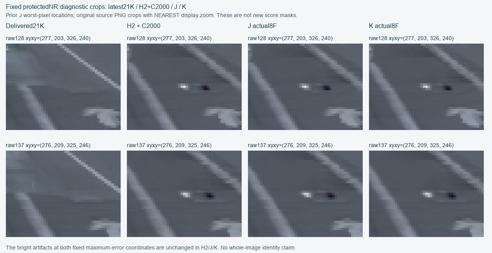
真实2F／2B全父白点归因 · 测量合同 · 37旧足迹与非道路归因 · 保留车投影尾补充 · 最坏像素与真图
已定位的监督覆盖缺口
实际执行的资格程序读取fit/protect mask并确认互斥，却仅以49帧中累计fit贡献>0决定父点可训练；材质训练只在fit_mask上计算RGB损失，没有protect损失。一个父点可在少量合法像素获训练资格，同时改变其它可见保护像素。
主父13在两白点分别承担约76%／67%的新增道路贡献，颜色由Cwarm(.391,.425,.471)升到2K(.990,1,1)。它的正fit质量只来自135–137的KEEP／DELETE，真实源RGB来自153–160；两白点本身fit=false、protect=true。已有证据支持监督覆盖缺口，未发现读错target路径；尚不能仅据聚合质量认定具体白线像素混入或多视冲突。
完整C49后台对照：新正式2K后停止追加
沿用完整40392-child C道路和历史C400材质初始化；49个BUILD视图重新资格得到2119父／6357RGB标量，7979父冻结。新Adam从正式0开始，不把旧C400或smoke算成本轮正式更新。
真实600.208秒训练smoke＋disposable／freshrestore共1996工程更新，保存、评价、完整Adam/RNG/sampler恢复和后续2步已覆盖。初始恢复逐值同；next2参数一致但Adam最大差2.84e-14，不称整个状态bitexact。正式2K完成4016F／4000B，完整49双状态Cwarm vs2K再196F。13包599,316,804B必要数据已取回逐SHA验证。
末5完整epoch pairedMSE相对前5只降0.0009545%；颜色仍漂移，500→2K平均RGB变化0.0364／最大0.4198，不称参数收敛。近缝部分改善但侧缝与固定C2遮挡仍在，按用户允许决定步数，在2K止，余8000未执行。全49原门477通过／462失败／100空域，不作为正式采用。
独立C49报告提供完整三列同步viewer和取回清单。49帧均参与训练，原HELD9转BUILD，不声明独立泛化。Cwarm49仅保存PNG；全49几何一致由执行断言核对，独立CPU warm逐值复核限4帧；2K全部98份float已保存。
控制与成本口径
| 控制 | 真实结果 | 结论范围 |
|---|---|---|
| 原完整C | 覆盖大银片，同时侵入轮胎 | 按用户授权保留49帧独立对照 |
| D安全62行 | 保车但无主缝改善 | 未采用 |
| E/F各400 | 原表面RGB回写未过主缝；F新增DELETE暗条 | 不并入C2K步数 |
| H1/H2 | H1 cap16中断；H2仅cap64补齐，减大银片、保前景 | 54F/47dummyB＋113F/100dummyB，0优化 |
| I世界coverage | 固定0.4m、128/137 KD四次前向更差 | 停止该单侧控制，不搜宽度 |
| J汇总RGB约束 | 6池过，部分bin回退 | 算子24F/16dummyB＋8F，1次CPU LP |
| K局部RGB约束 | 6＋106过，保护域及可见细缝尚未解决 | 复用J算子，新8F，1次CPU LP |
| 两点父贡献＋L回滚 | 定位材质监督覆盖缺口；刺眼白点恢复，邻近暗点未消 | 诊断2F/2dummyB，L8F/0B/0新求解 |
本轮主线组件正式累计21K＋新增2K＝23K，仍不是单模型连续23K。工程smoke／恢复1996、历史E/F800及其工程16、旧C400、CPU求解和推理分别记账。
原默认viewer、原v44／a5模型及源C资产未改；模型与结果保留，human_verdict=null。GPU按用户要求保持开机。